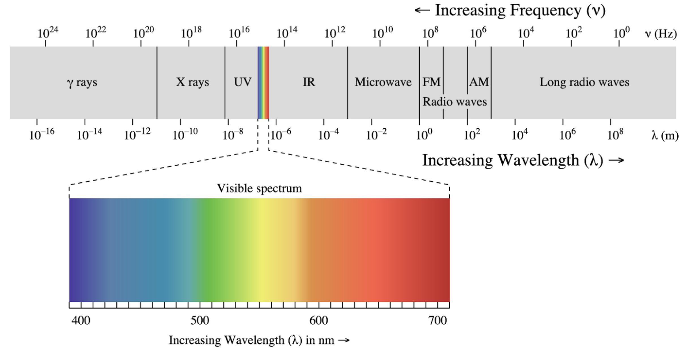

This page was generated from `/home/lectures/exp3/source/notebooks/L14_old/Electromagnetic Optics.ipynb`_.

Electromagnetic Optics¶
So far we have looked at the propagation of light in form of ray’s and its description in Gemoetrical Optics. We made a number of assumtions that we formulated as postulates. We then extended this description by a scalar Wave Optics description to allow for a description of interference and diffraction, which can not be explained by Geometrical Optics. Yet concepts of refractive index and light matter interaction and the intensities are not covered by Wave Optics and also just postulates.
Electromagnetic Optics allows us to define these missing things. We discover light as electromagnetic waves consisting of electric and magnetic fields, which allow us to describe the interaction with charges in atoms, which is the foundation for the refractive index for example. The new thing is therefore the fact that we now need vectors for the description of light.


Fig.: Demonstration of the vectorial nature of the electric field of electromagnetic waves with the help of a set of polarizers. (Left) The firstr polarizer on the right side of the image is transmitting only the vertical direction of the electric field. This vertical direction of the electric field is probed with the second polarizer. If pointing in the same direction, the intensity as measured with the meter behind is maximum. When probed with a second polarizer along the horizontal direction (Right), the detector shows zero intensity.
Electromagnetic Spectrum¶
While most of our considerations are focused on electromagnetic waves in the visible region, all of them can be generalized to other regions of the very broad electromagnetic spectrum. The electromagnetic theory is scale free, meaning that the same effect on specific structures occur also at smaller scales if you scale the wavelength of the wave.

Fig.: Electromagnetic wave spectrum with its specific regions.
Maxwell Equations¶
To obtain a wave equation in terms of electric \(\vec{E}\) and magnetic fields \(\vec{B}\) we need Maxwell’s equations. We will consider them in vacumm, i.e. for zero charge \(\rho=0\) and current density. The electric and magnetic permeabilities of vacuum are given by \(\epsilon_0\) and \(\mu_0\).
We will take the first (ME.1) of the four equations and apply another rotation \(\nabla \times\) to both sides
We can exchange the time and spatial derivate on the right side as \(\nabla\) is not depending on time to get
\begin{eqnarray} \nabla\times\nabla\times \vec{E}&=& - \frac{\partial \nabla \times \vec{B}}{\partial t}\\ &=&-\epsilon_0\mu_0 \frac{\partial^2 \vec{E}}{\partial t^2} \end{eqnarray}
where we used the third equation (ME.3) to replace the rotation of the magnetic field. We now have to expand the left side with the identity
Note the the first term on the right side is the gradient of the divergence of \(\vec{E}\), while the second term is the divergence of the gradient of \(\vec{E}\). We know that in vacuum the divergence of the elecric field is zero (no sources of the electric field) and therefore $:nbsphinx-math:nabla\times\nabla\times `:nbsphinx-math:vec{E}`=-\nabla`(:nbsphinx-math:nabla :nbsphinx-math:vec{E}`) $ and we have our wave equation
Wave Equation
The wave equation for the propagation of electric fields in vaccum is given by
The phase velocity of the wave is
One of the interesting relations to electrostatics is now, that the static permeabilities \(\epsilon_0.\mu_0\) determine the speed of light. Note that the above wave equation is a vectorial equation., That means there is a wave equation for each component of the elecric field, e.g.
for the x-component of the electric field. Equivalent equations exist for the other field components.
The same mathematical treatment can be done for the magnetic field \(\vec{B}\) and the same wave equation will follow from that.
Plane Waves, Spherical Waves¶
Plane Waves¶
We will first have a look at elementary solutions of the wave equation again as we have done that in the wave optics sections. First of all we can write the solution of the wave equation as a product of a spatial and a temporal amplitude, i.e.
\begin{eqnarray} \vec{\mathcal{E}}(\vec{r},t)&=&\mathcal{Re}\lbrace \vec{E}(\vec{r})e^{-i\omega t}\rbrace\\ \vec{\mathcal{B}}(\vec{r},t)&=&\mathcal{Re}\lbrace \vec{B}(\vec{r})e^{-i\omega t}\rbrace \end{eqnarray}
We use again the complex notation and remember that the measurable physical quantity \(\vec{\mathcal{E}}\) or \(\vec{\mathcal{B}}\) has to be a real valued quantity. Therefore we may calculate with the complex quantities, but finally need to calculate the real part (\(\mathcal{Re}\)) if required. In the following we will use the complex notation throughout the calculation and only refer to the real value if this is really useful. When inserting the complex ansatz above into the wave equation, we can take the time derivative which yields for the electric field
\begin{equation} \Delta \vec{E}(\vec{r})+\frac{\omega^2}{c^2}\vec{E}(\vec{r})=0 \tag{Helmholtz Equation} \end{equation}
The latter equation is known as the Helmholtz equation. It is the differential equation for the spatial amplitude of the wave. We may also insert the solutions into the first and the third Maxwell equation which results in
\begin{eqnarray} \nabla \times \vec{E}&=&i\omega\vec{B}\\ \nabla \times\vec{B} &=& -\epsilon_0\mu_0 i\omega \vec{E} \end{eqnarray}
We obtain finally a plane wave with our knowledge from the wave optics section.
\begin{eqnarray} \vec{E}(\vec{r})&=&\vec{E}_{0}e^{i\vec{k}\cdot\vec{r}}\\ \vec{B}(\vec{r})&=&\vec{B}_{0}e^{i\vec{k}\cdot\vec{r}}\\ \end{eqnarray}
Taking the rotation of those two equations yields
\begin{eqnarray} \vec{k}\times \vec{E}_{0}&=&\omega \vec{B}_0\\ \vec{k}\times \vec{B}_{0}&=&-\frac{\omega}{c^2} \vec{E}_0 \end{eqnarray}
The latter two equations tell essentiall two things. First of all they state that the vectors \(\vec{k}\), \(\vec{E}_0\) and \(\vec{B}_{0}\) stand perpendicular to each other. This is why electromagnetic waves are termed transverse waves. The physical quantity of a transverse wave change sperpendicular to its propagation direction.
The second thing is that the ampolitudes of the two waves are not independent of each other but rather
This is quite helpful, as we may just do calculations for the electric field and transfer them with the help of this conversion to the magnetic field.

Fig.: Plane wave propagating along the y-direction, with the electric field oscillating along the z-direction..
Spherical Waves¶
The situation is a bit more complicated for spherical waves and we wont do the detailed calculation here. A spherical wave is constructed with the help of an axuliary function
where \(\hat{x}\) is the unit vector in the x-direction and
is our scalar spherical wave we know from the wave optics section. The auxilary function is termed Vector potential and also fulfills an Helmholtz equation
A more detailed calculation finally leads to the following Electric and magnetic field vectors in spherical coordinates and for large distances \(r\gg\lambda\) or \(k r\gg2\pi\).
\begin{eqnarray} \vec{E}(\vec{r})&=& E_0 \sin(\theta) U(\vec{r}) \hat{\theta}\\ \vec{B}(\vec{r})&=& B_0 \sin(\theta) U(\vec{r}) \hat{\phi} \end{eqnarray}
The electric and magnetic fields are therefire tangential to the wavefront surface, which is a sphere. The propgation direction is always radial, so the spherical wave is also a transverse electromagnetic wave.

Fig.: (Left) Definition of the unit vectors in a spherical coordinate system. (Right) Vectors of the electric and magnetic field for a spherical wave.